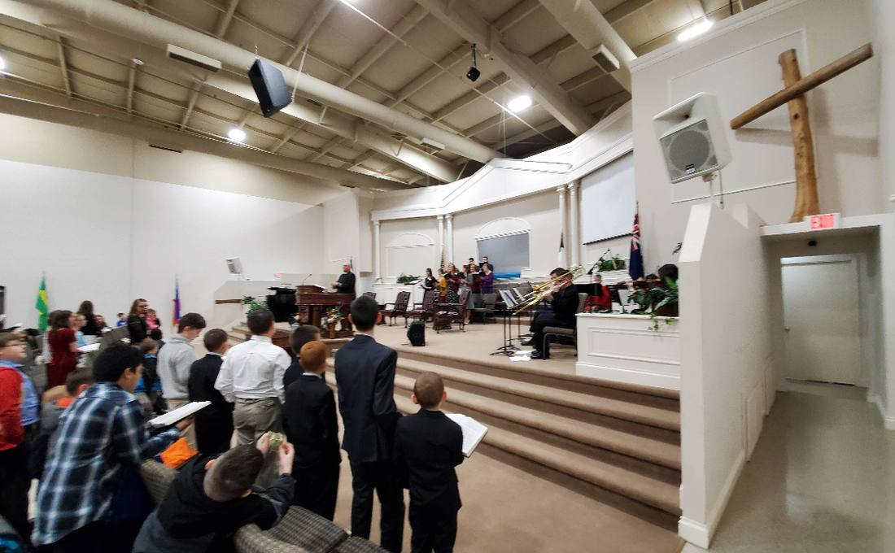

Your First Visit
Visiting a church for the first time can be daunting. Here is exactly what to expect, so nothing is a surprise.
When to come
Sunday 11:00 am is the main service. Bible classes at 10:00 am.
How long
The service runs a little over an hour, music followed by preaching.
What to wear
Many dress up, but come as you are.
Your kids
Nursery at every service, plus classes for ages 3 through sixth grade.

Common Questions
During our services you will enjoy the inspiring and uplifting music of the choir, ensembles, and soloists. The music is always followed by a clear, helpful, and challenging Bible message from our Pastor. This service is a little over one hour in length.
Also, during the 10:00 hour, there are Bible classes for adults in all stages of life. These classes are smaller group settings where you are invited to meet people, enjoy perhaps some coffee and donuts, and hear a teaching lesson more directly applicable to your life-stage. The best way to get to know people at Lighthouse Baptist Church is to visit one of these adult Bible classes.
Starting with excellent nurseries, there is something special for children of all ages. At every service there are safe, clean, and well-staffed nurseries for children 2 years old and under. For the infants, workers will take your cell phone number so that the nursery attendants can easily contact you if there is a need.
For children three years old through sixth grade there are fun, friendly, and Bible-centered classes. These classes are staffed with trained, friendly, and well-qualified teachers and helpers who will make church exciting and memorable for your child.
When you first arrive at LBC we would like to help you find the appropriate nurseries, classes, and services for every person in your family. Our greeters and ushers are located in the lobby of the main auditorium and will gladly help direct and even escort you to the right place.
Our ministry leaders and many of our church family dress in more traditional "Sunday" dress; however, our main goal is that you would feel welcome and comfortable on your visit here at Lighthouse!
No, we don't invite you to Lighthouse Baptist Church for your offering. We only want our service to be a help and a blessing to you. We hope you will find in this place a warm family spirit, truth from God's Word, and a place where you can grow in God's grace. Please don't feel any obligation to participate in the offering as a guest.
- Sunday 10:00 am, Adult and Children's Bible Classes
- Sunday 11:00 am, Morning Service
- Sunday 6:00 pm, Evening Service
- Wednesday 7:00 pm, Bible Study
- Wednesday 7:00 pm, Children's Program
The Sunday evening service moves to 2:00 pm on the 5th Sunday of the month.
If there's something we missed, give us a call at (765) 384-7572, or ask someone when you arrive. Whether you're new to the area and looking for a church home, or it's been a long time since you attended church at all, we hope your first visit will be a good one.
Our desire is to serve you and your family, and we are looking forward to meeting you personally. Let us know how we can serve you better, and we hope to meet you this Sunday!